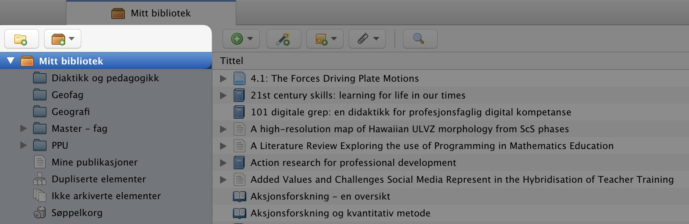
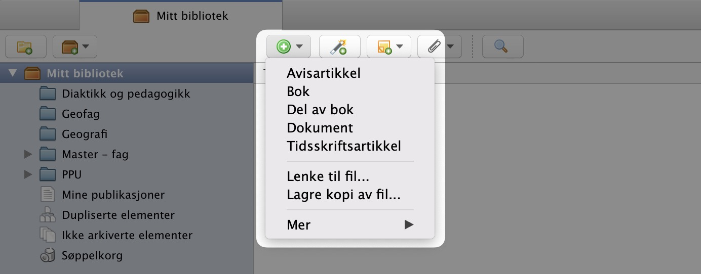
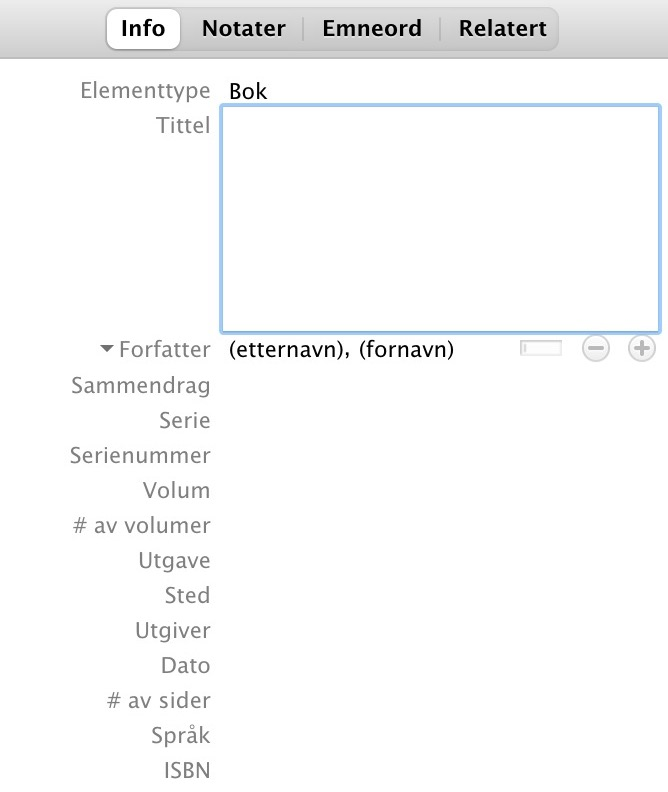
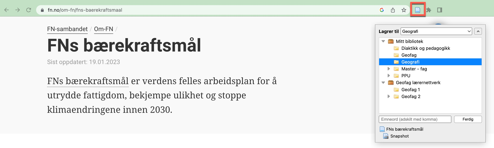
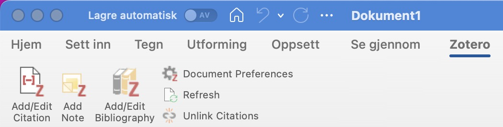
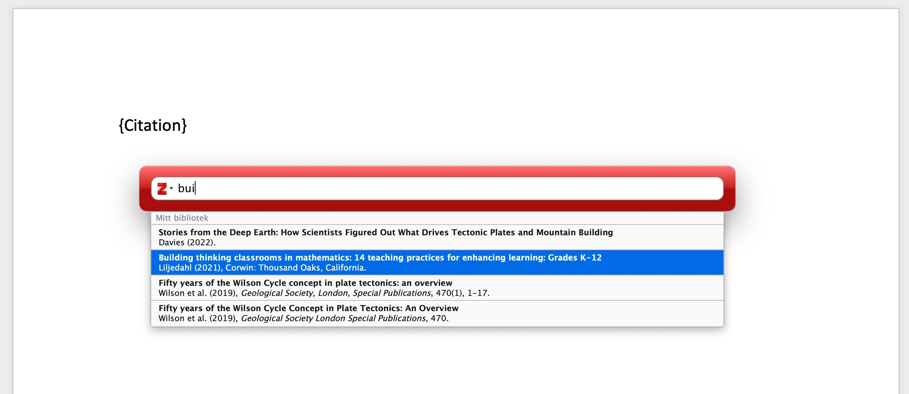
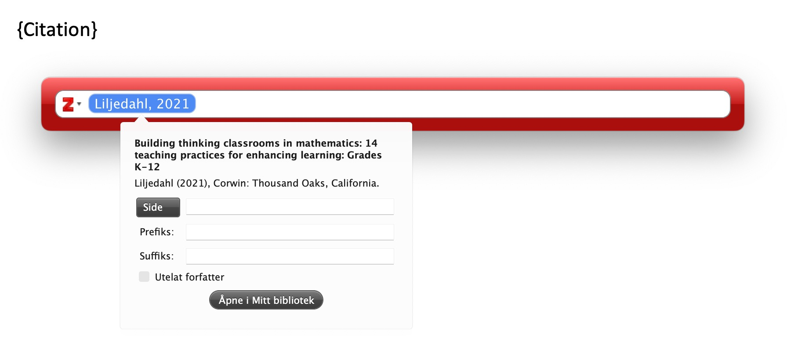
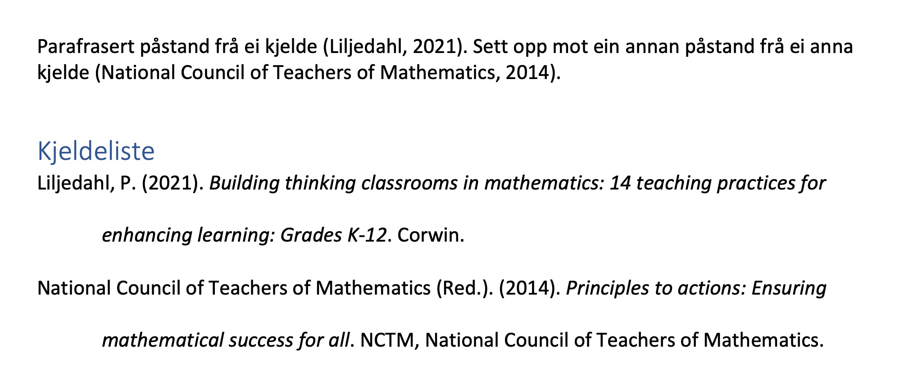
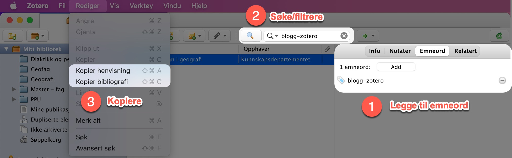

Kva er Zotero?
Zotero er eit verktøy for å handtera kjelder og siteringar. Det er relativt enkelt å bruka, og kan nyttast på tvers av ulike platformar og programvare. Terskelen for å implementera Zotero i undervisinga kan kanskje opplevast som litt høg. Så her kjem eit par argument for kvifor det kan vera ein fordel å ta dette steget, samt eit par konkrete tips og triks 🚀
Kvifor bruka Zotero?
Ein del av det å gjera elevane studieførebudde er å gjera dei i stand til å bli gode på kjelder. Stadig ser ein saker frå UH-sektoren om studentar og kjeldebruk. Det er òg tydeleg i læreplanverket at kjelder er ein viktig del av fagfornyinga. Mellom anna står det under kjerneelementet Utforsking og geografiske metoder i læreplanen for geografi at:
De skal også kunne bruke informasjon fra ulike typer kilder og kritisk vurdere hvor pålitelige og relevante disse kildene er. (Kunnskapsdepartementet, 2019)
og vidare i læreplanen til same fag under den grunnleggjande ferdigheten Å kunne skrive vert det trekt fram at
Å skrive i geografi innebærer også å utforske, beskrive, drøfte og vurdere geografiske forhold og å bruke og vise til kilder. (Kunnskapsdepartementet, 2019)
Utfordringa når ein arbeidar med kjelder er gjerne å halda styr på kjeldene ein har brukt (organisering) samt all tida det tar å oppgje og føra kjeldene i ein bestemt stil (henvising). Nettopp her er Zotero eit framifrå verktøy. Her kan ein enkelt skaffa seg oversikt over alle kjeldene ein har brukt, organisera dei i mapper, ta notater, enkelt sitere i t.d. Word eller Google Docs osb. Ved å læra elevane opp i Zotero frigjer ein mykje tid frå den manuelle føringa av kjeldene, som jo ikkje er spesielt studieførebuande. Denne tida kan elevane heller nytta til å vurdera kjeldene, lesa innhald og vera kritisk. Biblioteket dei bygger seg opp gjennom vidaregåande kan dei òg ha med seg i vidare studier 🧑🎓
I tillegg er Zotero veldig fleksibelt sett opp mot t.d. det innebygde kjeldeverktøyet i Word. Der ligg kjeldene «låst» inne i Word, og ein har lite nytte av dette andre stader. Med Zotero kan ein nytta det same biblioteket overalt. Både i presentasjonar og tekstbehandling uavhengig av om ein er i Microsoft eller Google sitt univers.
Som lærarar er det òg lurt å læra seg Zotero. For å få elevane til å nytta kjelder i presentasjonar og tekstar er det nok lurt gå framfor som gode døme.
Korleis bruka Zotero?
💡 Her kjem eit par tips og triks til korleis ein kan bruka Zotero i kjeldearbeidet sitt
Organisere biblioteket
Når du har lasta ned Zotero startar du med eit tomt bibliotek. Dette kan du organisera i samlingar (mapper). Du lager nye samlingar med å trykka på knappen til venstre over Mitt bibliotek

Her kan ein t.d. dela inn etter fag, etter årstrinn eller andre inndelingar slik ein ønsker. Det er mogleg å ha under-samlingar viss ein ønsker det.
Legge til kjelder
Når ein skal fylla biblioteket sitt gjer ein dette på fleire ulike måtar. Her vil eg demonstrera korleis ein gjer det
- manuelt
- med Zotero Connector
- magisk 🧙
Legge til manuelt

For å legga til kjelder trykker ein på det grøne pluss-teiknet og vel ein passande type (t.d. bok). Når ein har gjort dette får ein opp ei kolonne til høgre med ulike felt som må fyllast ut:

På sidene til kjeldekompasset finn ein informasjon om kva felt som må fyllast ut.
Her er eit døme på kapittel i bok med redaktør (i APA7-stil)
Med Zotero Connector
Zotero Connector er ein plugin til nettlesar som gjer at ein automatisk kan legga kjelder på nett inn i biblioteket sitt. Her kan ein ta med snapshot av nettsida ein besøker, eller lasta ned pdf-dokumentet ein er inne på. Ein kan òg velga kva for samling i biblioteket den aktuelle ressursen skal lagrast til

Det er ikkje alltid at alle felt vert rett fylt ut i Zotero, så dette må dobbelsjekkast (gjerne opp mot kildekompasset)
Magisk
Nokre kjelder som bøker og forskingsartiklarkan leggast inn ved hjelp av identifikatorar som ISBN, DOI, PMID osb. Då trykker ein på tryllestav-knappen til høgre for den vanlege “legg til”-knappen. For ein del norske bøker fungerer dette ofte ikkje, men for forskingsartiklar med DOI passar det godt.
Sitere i tekstbehandlar
I Microsoft Word og Google Docs er det eigne Zotero-verktøy. Når du har lasta ned og innstallert Zotero vil du sjå dette neste gong du opnar Word.

Her ligg det verktøy for å legga inn referansar i tekst og kjeldeliste/bibliografi til slutt. For å legge inn referanse i teksten trykker ein på Add/Edit Citation og søker etter kjelda i søkefeltet. Første gang blir du bedt om å velga siteringsstil. Eg nyttar vanlegvis APA7 (American Psychological Association).

Om du vil inkludera sidetal, kan du klikka på den valgte kjelda og legga inn dette manuelt. Då vil Zotero automatisk formatera referansen i teksten på rett måte (og på rett språk).

Til slutt kan du laga kjeldeliste av dei kjeldene som er nytta i teksten med å trykka på Add/Edit Bibliography. Denne vert automatisk sortert og formatert etter valgt referansestil.

Sitere utanfor tekstbehandlar
I presentasjonsverktøy som PowerPoint har ein ikkje innebygde Zotero-verktøy. Likevel er Zotero til god hjelp. Ein måte ein kan halda oversikt over kva kjelder ein har nytta i eit aktuelt prosjekt er gjennom å legga til emneord til dei ulike kjeldene. Til dømes blogg-zotero. Då kan ein søka og filtrera biblioteket sitt etter det spesifikke emneordet. Vidare kan ein då kopiera henvising (shift+cmd/windows+A) av den valgte kjelda. Ein kan til slutt markera alle kjeldene og kopiera bibliografi (shift+cmd/windows+C).

Kjelder
Kunnskapsdepartementet. (2019). Læreplan i geografi (GEO01-02). Fastsatt som forskrift. Læreplanverket for Kunnskapsløftet 2020. https://www.udir.no/lk20/geo01-02